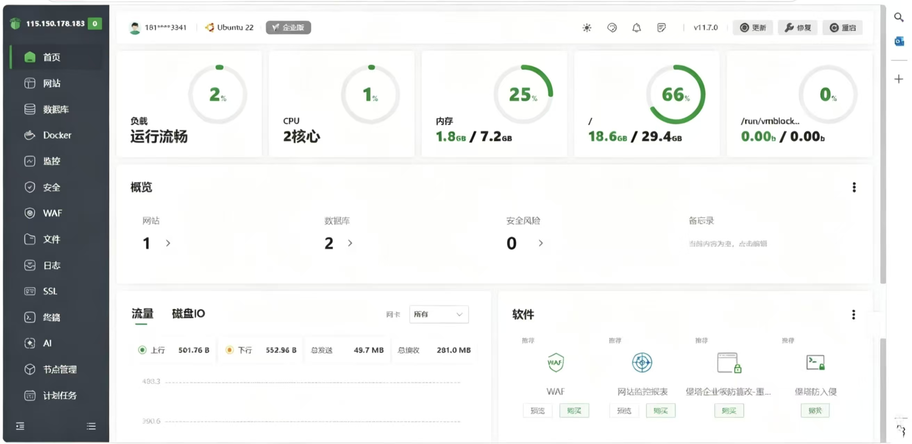
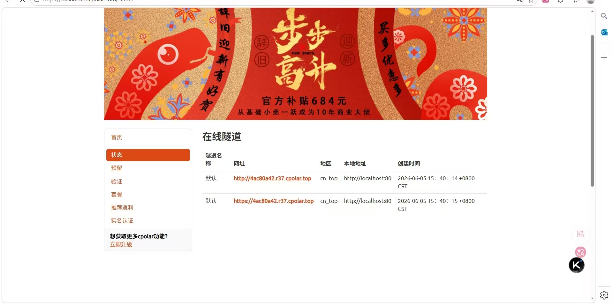
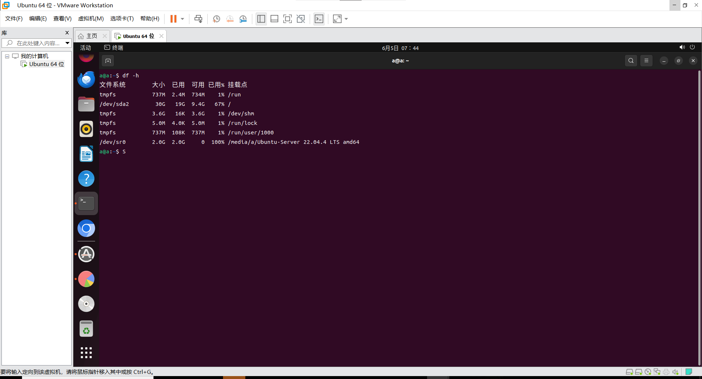
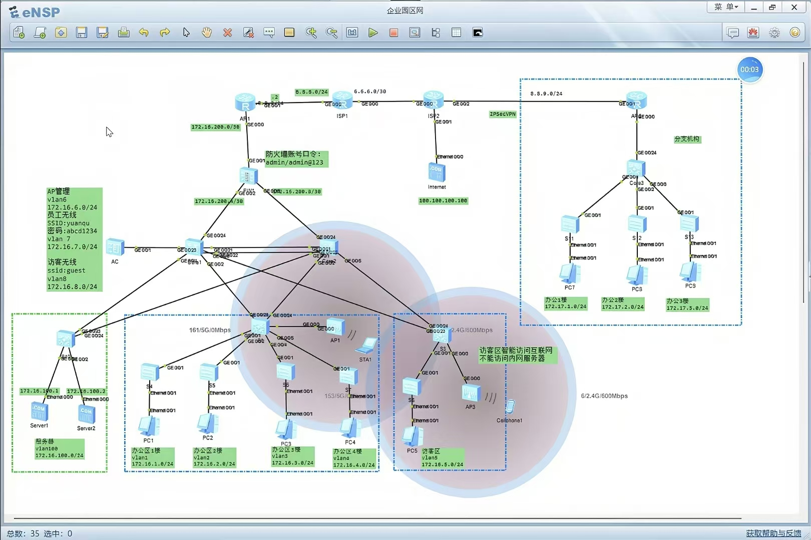
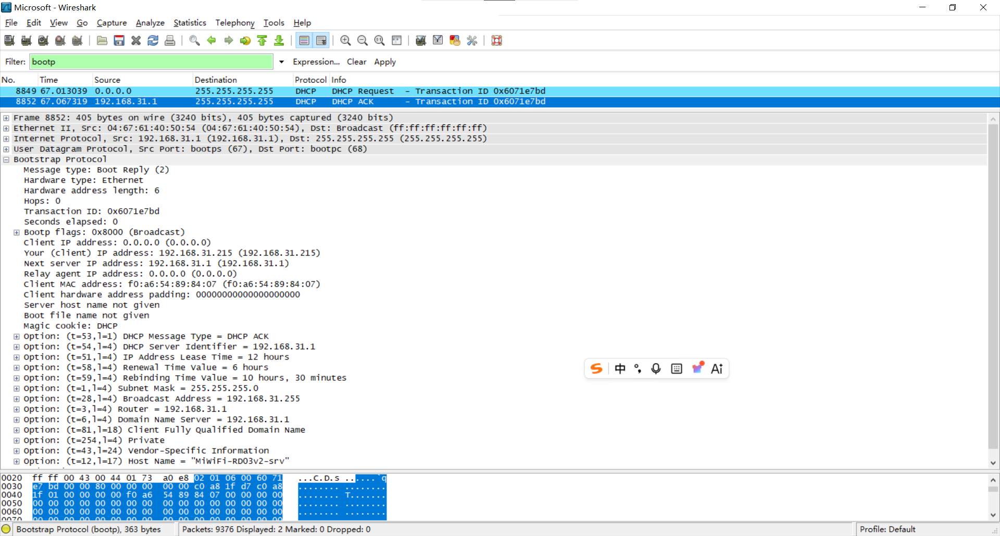
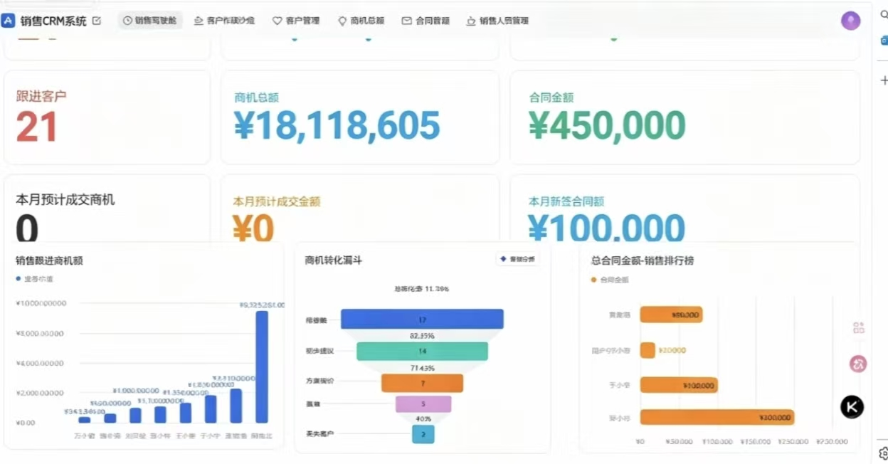

技术交付与全栈实施工程作品集
技术锚点：底层协议抓包诊断 / 系统架构与容灾 / Web应用部署 / 业务流敏捷交付
Linux / LNMP
跨环境数据灾备与重构
Nginx 反向代理与伪静态
eNSP 园区网架构
Wireshark 协议分析
Lark Base 数字化交付
项目一：基于 Linux + Cpolar 的企业级 Web 基础设施部署与 404 故障排查
1.1 架构设计与网络边界控制
为满足企业快速上线高可用系统的技术需求，在独立 Linux 虚拟化环境中模拟标准生产交付场景。采用“宝塔面板环境 + Nginx + WordPress”的高效 Web 技术栈实现业务平滑上线。同时，严格规划网络边界，在宿主机与容器间开辟非标准映射端口 18040，并在系统级防火墙精准下发安全组放行规则，实现内网安全隔离与流量管控。
1.2 F12 状态码判别与伪静态（URL Rewrite）策略固化
在系统通过 Cpolar 穿透发布至公网初期，遭遇用户点击子页面全站抛出 HTTP 404 Not Found 拦截的故障。
诊断与破局： 拒绝盲目重启服务，规范调出浏览器 F12 开发者工具网络面板。观察到静态图片稳定返回 HTTP 304（代表缓存未改变，成功调用），精准排除了静态资源缺失问题。判定症结在 Nginx 层动态路由解析失效。深入 Nginx 配置文件固化伪静态路由重写逻辑，强制重定向至前端总入口：
location / {
# 核心修复：固化伪静态路由重写规则，终结 404 幽灵
try_files $uri $uri/ /index.php?$args;
}1.3 反向代理环境 HTTPS 重定向死循环解决方案
解决 404 后，因上游穿透云端提供 HTTPS 加密流，而本地宿主机 Nginx 转换为 HTTP 路由。应用层读取不到合法的 HTTPS 状态标识，引发无限重定向死循环 (ERR_TOO_MANY_REDIRECTS) 。通过在 wp-config.php 进行动态代码注入，强制对齐 PHP 引擎环境变量，彻底解耦协议层冲突：
// 注入核心配置，动态适配公网域名并解耦协议冲突
if (isset($_SERVER['HTTP_X_FORWARDED_PROTO']) && $_SERVER['HTTP_X_FORWARDED_PROTO'] === 'https') {
$_SERVER['HTTPS'] = 'on';
}1.4 核心实施拓扑与运行状态监控

① 宝塔面板：系统负载流畅，根分区已无损扩容至 30G 状态监测

② Cpolar：内网穿透公网安全隧道运行快照（18040端口映射）
项目二：独立设计的跨环境资产迁移与生产级灾备扩容架构方案
2.1 跨环境数据安全迁移与架构重构
针对旧环境瓶颈，独立主导 跨环境核心资产迁移架构。在不中断核心业务前提下，将源主机的资产平滑转移至全新 Linux 生产级宿主机。执行严格的文件完整性校验，规避底层环境污染与数据截断丢失风险。
2.2 生产级全量灾备与低峰期滚动淘汰标准作业（SOP）
建立标准化的底层容灾备份机制。避开白天业务高峰期产生的 I/O 阻塞压力，配置自动化计划任务（Cron Job），锁定在每日凌晨 01:30 （业务访问量最低谷）自动执行 mysqldump 全量数据抽离，并采取滚动保留 7 份（一周循环淘汰） 的精细化灾备策略，筑牢数据安全底线。
2.3 Linux 生产环境磁盘无损扩容与极端演练
为模拟业务暴增导致系统盘告警场景，摒弃破坏性删除分区的危险旧法，直接在 CLI 字符界面调用标准工具链进行秒级在线无损扩容，确保护航业务零中断：
# 1. 在线动态重塑磁盘物理分区边界（不破坏现有数据资产）
growpart /dev/sda 2
# 2. 精准拉伸延伸 Ext4 文件系统，使其立即满额生效
resize2fs /dev/sda2系统重构后，通过逆向编辑 wp-config.php 快速完成数据库鉴权凭证的精准对齐，并演练极端场景下的管理员密码哈希重置应急修复。

Linux 底层命令行：验证文件系统与分区无损扩容，或数据库定时安全备份脚本
项目三：企业级园区网络架构规划与底层通信协议诊断
3.1 项目背景与园区网拓扑规划
独立设计标准企业园区局域网方案。通过严谨的三层网络架构设计确保高可用性与安全隔离：
安全隔离与防环： 精准划分独立 DMZ 服务器安全区与办公网 VLAN，二层网络配置 MSTP 与 VRRP 彻底消除环路并实现网关热备。动态路由收敛： 在核心层全网激活 OSPF 动态路由协议 ，实现多区域路由信息的秒级学习。边界安全与 NAT： 出口防火墙配置 NAT 地址转换，并挂载 ACL 锁死非法网段流量入站。
3.2 eNSP 网络仿真拓扑全景

基于 eNSP 构建的包含双核心高可用、防火墙边界及独立 DMZ 区域的园区骨干网
3.3 Wireshark 协议层断代与深度排障实战
在实施现场遭遇复杂故障时，直接利用 Wireshark 进行底层协议抓包自证，用数据流精准定责：
DHCP 交互精准诊断： 深度抓取并还原 DHCP 动态地址分配的完整 DORA 交互过程 （Discover ➡️ Offer ➡️ Request ➡️ Acknowledge）或状态机快速双向续约 过程。通过分析 BootP 报文中的 Transaction ID 暗号与 Client MAC，快速断代解决现场局域网断网、流氓 DHCP 抢答及恶性 IP 冲突故障。
3.4 底层协议抓包分析实况验证

利用 Wireshark 过滤器精准捕获网卡协议交互报文，逆向验证 DHCP 状态机通信握手机制
项目四：现代化数字化管理系统与业务 CRM 轻量级敏捷交付
4.1 业务痛点背景与低代码敏捷选型
针对企业 CRM 业务定制开发周期长、多维数据割裂的痛点，选用现代化数字化平台——飞书多维表格（Lark Base），敏捷交付具备【底层数据骨架 + 自动化流引擎编排 + 实时可视化 BI 看板】 的高效业务系统。
4.2 多维数据库建模与自动化流引擎配置
设计非线性关联实体表，打破信息孤岛。为解决系统冗余频繁报警，对自动化链路进行深度逻辑调优：
触发源收敛与变量对齐： 精准锁定【阶段变更】为唯一有效触发源，并机制性修复普通文本与动态变量混淆的通信逻辑故障。业务流程自动化赋能： 编排系统抓取 [负责人] 与 [金额]，向指定协同群组实时推送标准结构化业务战报。
4.3 数字化交付成果：BI 销售驾驶舱大屏

基于业务模型搭建的多维数字化分析看板，实现全生命周期数据的可视化流转
4.4 全栈排障技术能力与工程素养综合梳理
核心运维维度
传统初级表现
标准化工程实践与方法论
应用层排障思维 遇到系统崩溃盲目重启应用，主观推诿猜测。
遵循全链路逆向追踪：前端 F12 抓包划分边界定责，底层利用 Wireshark 提取 pcap 报文证据。
状态码深层认知 盲目信任 200 OK，认为页面能打开即完全正常。
识别欺骗性假死，精准剖析 304 缓存未改动机理与 404 路由失效重写逻辑。
高危变更控制 在线直接调整生产环境代码，出错后依赖记忆回溯。
执行写操作或底层扩容前，强制建立物理快照与 .bak 副本，预留安全容错回滚通道。